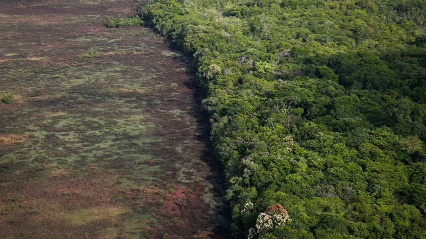

BRUXELAS (Reuters) - O Parlamento Europeu aprovou uma lei contra desmatamento na quarta-feira que proibirá as importações pela União Européia (UE) de café, carne bovina, soja e outras commodities que estiverem ligadas à destruição das florestas do mundo.
A lei exigirá que as empresas que vendem produtos para a União Europeia apresentem uma declaração de due diligence e informações "verificáveis" de que seus produtos não foram cultivados em terras desmatadas após 2020. Caso contrário, elas correm o risco de multas pesadas.
A lei ainda precisa de aprovação formal dos países da UE --um processo que normalmente ocorre por meio de acordos legais pré-acordados-- antes de entrar em vigor.
As grandes empresas teriam 18 meses para cumprir e as empresas menores 24 meses.